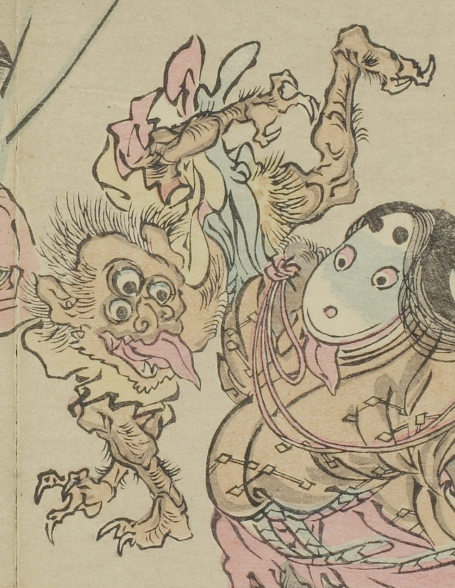

三つ目の化物。肌は黄色く、手足には鋭い爪がある。半裸で駆けるような姿勢である。口を大きくあけ、長い舌をだしている。
出典：親書誌：U426_nichibunken_0093：暁斎百鬼画談；ギョウサイヒャッキガダン／日付：2006／資源識別子：U426_nichibunken_0093_0025_0000
Copyright (c)2010- International Research Center for Japanese Studies, Kyoto, Japan. All rights reserved.